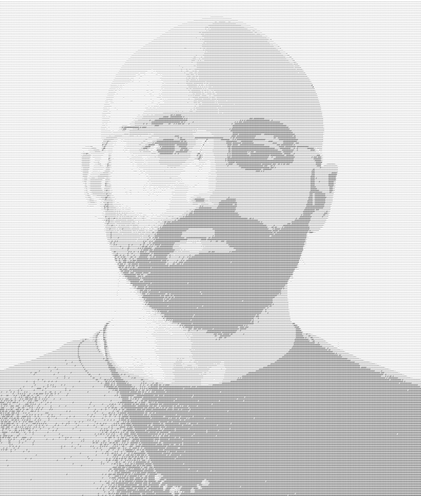

Home | Publications | CV

PhD Student at the Physical Computing Lab, Free University of Bozen-Bolzano, supervised by Rosella Gennari and Maristella Matera (HINT Lab, Politecnico di Milano). I study natural language programming, with a focus on conceptual alignment between humans and machines. My research combines insights and methods from Natural Language Processing, End-User Development, and Interaction Design.
Before this, I received an MA in Applied Linguistics at the Free University of Bozen-Bolzano, with a thesis supervised by Rosella Gennari. And before, I collaborated with the SapienzaNLP group, and completed an internship at the MaiNLP Lab.
I am responsible for the high-performence machines at the Physical Computing Lab.
In languages with grammatical gender and/or gender agreement, you can refer to me with masculine forms.
Some topics I am currently working on: